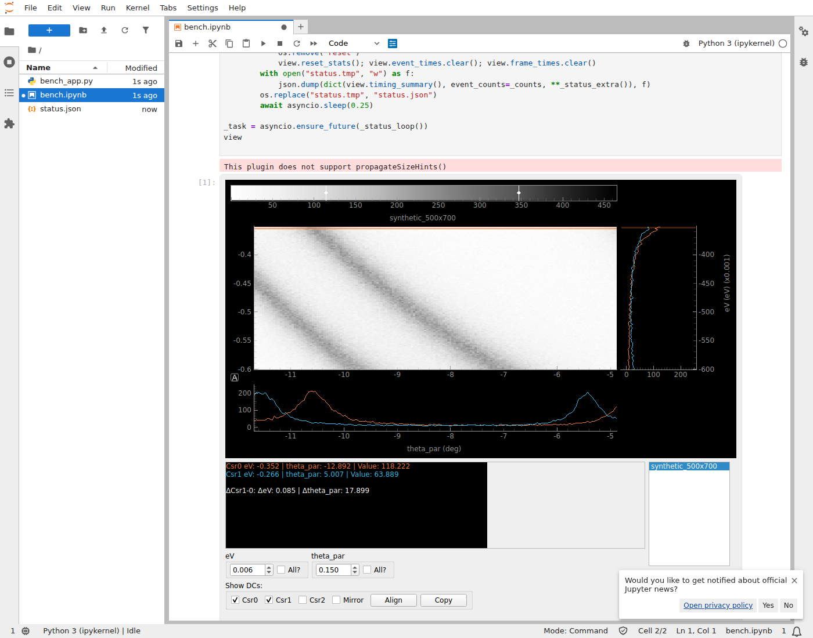

<title>peaks Notebook Viewer Feasibility</title>
<meta name="claude:viewport-fit-sides" content="cover">
<link rel="stylesheet" href="https://fonts.googleapis.com/css2?family=IBM+Plex+Mono:wght@400;500&family=IBM+Plex+Sans:wght@400;500;600&family=Source+Serif+4:opsz,wght@8..60,600;8..60,700&display=swap">
<style>
/* Layout: single reading column (~72ch) with full-width tables; crosshair orange/blue from _Disp2D as the only accents. */
:root {
  --bg: #f6f7f9;
  --surface: #ffffff;
  --fg: #1b2230;
  --muted: #5a6475;
  --rule: #d9dee6;
  --csr0: #c25a1c;      /* _Disp2D crosshair 0 orange, darkened for contrast */
  --csr1: #1f7fae;      /* crosshair 1 blue */
  --good: #2c7a4b;
  --warn: #9a6a00;
  --bad: #b23a3a;
  --chip: #eceff4;
  --display: "Source Serif 4", Georgia, "Times New Roman", serif;
  --body: "IBM Plex Sans", system-ui, -apple-system, "Segoe UI", sans-serif;
  --mono: "IBM Plex Mono", ui-monospace, "SFMono-Regular", Menlo, monospace;
}
@media (prefers-color-scheme: dark) { :root:not([data-theme="light"]) {
  --bg: #12161d; --surface: #1a2029; --fg: #e3e7ee; --muted: #9aa4b4; --rule: #2c3442;
  --csr0: #ee7733; --csr1: #33bbee; --good: #5fbf86; --warn: #e0b04a; --bad: #e57373; --chip: #232b37;
  color-scheme: dark; } }
:root[data-theme="dark"] {
  --bg: #12161d; --surface: #1a2029; --fg: #e3e7ee; --muted: #9aa4b4; --rule: #2c3442;
  --csr0: #ee7733; --csr1: #33bbee; --good: #5fbf86; --warn: #e0b04a; --bad: #e57373; --chip: #232b37;
  color-scheme: dark; }

body { background: var(--bg); color: var(--fg); font: 16px/1.6 var(--body); }
.wrap { max-width: 980px; margin: 0 auto; padding-block: 40px 72px;
  padding-left: max(16px, env(safe-area-inset-left, 0px)); padding-right: max(16px, env(safe-area-inset-right, 0px));
  display: grid; gap: 48px; }
.prose { max-width: 72ch; }
h1, h2, h3 { font-family: var(--display); text-wrap: balance; line-height: 1.2; margin: 0; }
h1 { font-size: clamp(1.9rem, 4vw, 2.6rem); }
h2 { font-size: 1.55rem; padding-bottom: 8px; border-bottom: 1px solid var(--rule); }
h3 { font-size: 1.15rem; }
p { margin: 0; }
section { display: grid; gap: 16px; min-width: 0; }
.eyebrow { font: 500 0.75rem/1 var(--mono); letter-spacing: 0.08em; text-transform: uppercase; color: var(--muted); }
.meta { color: var(--muted); font-size: 0.92rem; }
code, .mono { font-family: var(--mono); font-size: 0.88em; }
code { background: var(--chip); padding: 1px 5px; border-radius: 4px; }

.verdict { background: var(--surface); border: 1px solid var(--rule); border-left: 4px solid var(--csr0);
  border-radius: 6px; padding: 20px 22px; display: grid; gap: 10px; }
.verdict strong.option { font-family: var(--display); font-size: 1.25rem; }

.figures { display: grid; grid-template-columns: repeat(auto-fit, minmax(180px, 1fr)); gap: 12px; }
.fig { background: var(--surface); border: 1px solid var(--rule); border-radius: 6px; padding: 14px 16px; display: grid; gap: 4px; }
.fig .v { font: 600 1.6rem/1.1 var(--mono); font-variant-numeric: tabular-nums; }
.fig .l { font-size: 0.85rem; color: var(--muted); }

.table { overflow-x: auto; border: 1px solid var(--rule); border-radius: 6px; background: var(--surface); }
table { border-collapse: collapse; width: 100%; font-size: 0.9rem; }
th, td { padding: 8px 12px; text-align: left; border-bottom: 1px solid var(--rule); vertical-align: top; }
th { font-weight: 600; color: var(--muted); font-size: 0.8rem; letter-spacing: 0.02em; white-space: nowrap; }
td.n { font-family: var(--mono); font-variant-numeric: tabular-nums; white-space: nowrap; }
tr:last-child td { border-bottom: 0; }
tr.hl td { background: color-mix(in srgb, var(--csr1) 9%, transparent); }
.note { font-size: 0.85rem; color: var(--muted); }

figure { margin: 0; display: grid; gap: 8px; }
figure img { border: 1px solid var(--rule); border-radius: 6px; display: block; }
figcaption { font-size: 0.85rem; color: var(--muted); }

.cols { display: grid; grid-template-columns: repeat(auto-fit, minmax(280px, 1fr)); gap: 20px; }
.cols > div { min-width: 0; display: grid; gap: 10px; align-content: start; }
ul { margin: 0; padding-left: 1.2em; display: grid; gap: 6px; }
.pill { display: inline-block; font: 500 0.72rem/1 var(--mono); padding: 4px 7px; border-radius: 999px; vertical-align: 2px; margin-right: 6px; white-space: nowrap; }
.pill.ok { color: var(--good); background: color-mix(in srgb, var(--good) 14%, transparent); }
.pill.gap { color: var(--warn); background: color-mix(in srgb, var(--warn) 16%, transparent); }
.pill.risk { color: var(--bad); background: color-mix(in srgb, var(--bad) 14%, transparent); }

ol.steps { margin: 0; padding: 0; list-style: none; counter-reset: s; display: grid; gap: 14px; }
ol.steps > li { counter-increment: s; display: grid; grid-template-columns: 2.2rem 1fr; gap: 12px; }
ol.steps > li::before { content: counter(s); font: 600 1rem/2rem var(--mono); text-align: center; width: 2rem; height: 2rem;
  border-radius: 50%; border: 1.5px solid var(--csr1); color: var(--csr1); }
ol.steps > li > div { min-width: 0; display: grid; gap: 4px; }
.gate { font-size: 0.85rem; color: var(--muted); }
:focus-visible { outline: 2px solid var(--csr1); outline-offset: 2px; }
</style>

<main class="wrap">
  <header class="prose" style="display:grid;gap:12px">
    <span class="eyebrow">peaks · GUI · feasibility study</span>
    <h1>Embedding the PyQtGraph viewers in Jupyter and marimo</h1>
    <p class="meta">Prototype in <code>experiments/qt_rfb/</code>. Branch <code>pyqt-jupyter-tests</code>, November 2026. No changes to <code>peaks/</code>.</p>
  </header>

  <section>
    <div class="verdict prose">
      <span class="eyebrow">Recommendation</span>
      <strong class="option">A. Full QWidget/RFB adapter</strong>
      <p>The unmodified <code>_Disp2D</code> runs inline in JupyterLab and marimo. Dragging its own crosshair updates its own EDC and MDC cuts at about 30 FPS, or about 58 FPS with a one-line change to jupyter-rfb's JavaScript. Median pointer-to-screen latency is 60–80 ms and lag does not build up during long drags. There is no desktop window, no <code>%gui qt</code> and no Qt event loop.</p>
      <p>The remaining problems are popups and dialogs, viewer lifetime, and testing on real browsers, HiDPI screens and remote kernels. All of them can be solved inside the adapter, so nothing points towards a scene-level adapter (B) or another transport (C).</p>
    </div>
    <div class="figures">
      <div class="fig"><span class="v">0</span><span class="l">lines changed in <code>peaks/</code></span></div>
      <div class="fig"><span class="v">~185</span><span class="l">lines in the adapter, <code>qwidget_rfb.py</code></span></div>
      <div class="fig"><span class="v">30 / 58</span><span class="l">FPS delivered, default / 10 ms throttle</span></div>
      <div class="fig"><span class="v">60–80 ms</span><span class="l">median pointer to visible frame</span></div>
      <div class="fig"><span class="v">0.7 ms</span><span class="l">existing <code>_update_DC</code>, both cuts</span></div>
    </div>
  </section>

  <section>
    <h2>The real viewer in a notebook</h2>
    <figure>
      
      <figcaption>JupyterLab, synthetic 500 × 700 dispersion, after a scripted drag, wheel zoom and resize to 898 × 818. The Qt controls (spin boxes, check boxes, scan list) are part of the frame.</figcaption>
    </figure>
  </section>

  <section class="prose">
    <h2>How it works</h2>
    <ul>
      <li>The existing window is shown with <code>WA_DontShowOnScreen</code>. Qt lays it out and paints it as if visible, but never maps it. Under an X server <code>xwininfo</code> reports it <code>IsUnMapped</code>, while a native <code>_Disp2D</code> in the same process is <code>IsViewable</code>.</li>
      <li>Each frame: <code>processEvents()</code>, then <code>widget.render()</code> into a QImage that wraps a NumPy buffer. jupyter-rfb encodes it as JPEG (quality 80) while moving, and sends a lossless PNG 300 ms after movement stops.</li>
      <li>Browser input becomes <code>QMouseEvent</code>, <code>QWheelEvent</code> or <code>QKeyEvent</code>, sent to the widget's <code>QWindow</code>. Qt's own dispatch picks the child under the pointer (usually the <code>GraphicsView</code> viewport), maps coordinates and keeps the mouse grab during a drag. The peaks code does not know it is in a browser.</li>
    </ul>
  </section>

  <section>
    <h2>Measurements</h2>
    <p class="prose meta">Lima VM, Ubuntu 26.04 aarch64, 8 vCPU, no GPU. Browser, server and kernel on the same machine over localhost. Python 3.13, pyqtgraph 0.14.0, PyQt6 / Qt 6.12.0, jupyter-rfb 1.0.2, JupyterLab 4.6.5, marimo 0.25.2, headless Chromium 156 driven by Playwright with synthetic 60 Hz pointer moves. Data: medium 500 × 700 and large 2000 × 2000 (eV × θ).</p>

    <h3>End to end, in the browser (DPR 1, medians)</h3>
    <div class="table">
      <table>
        <thead><tr><th>Frontend</th><th>Viewer</th><th>Data</th><th>Latency, median (max)</th><th>FPS, 2 s / 8 s drag</th><th>Settle, 2 s / 8 s</th></tr></thead>
        <tbody>
          <tr><td>Jupyter</td><td>A: standalone</td><td>medium</td><td class="n">66 (78) ms</td><td class="n">30.0 / 29.9</td><td class="n">117 / 119 ms</td></tr>
          <tr><td>Jupyter</td><td>A: standalone</td><td>large</td><td class="n">62 (68) ms</td><td class="n">30.0 / 30.0</td><td class="n">117 / 118 ms</td></tr>
          <tr class="hl"><td>Jupyter</td><td>B: <code>_Disp2D</code></td><td>medium</td><td class="n">70 (78) ms</td><td class="n">29.1 / 29.8</td><td class="n">68 / 51 ms</td></tr>
          <tr class="hl"><td>Jupyter</td><td>B: <code>_Disp2D</code></td><td>large</td><td class="n">72 (103) ms</td><td class="n">29.1 / 29.4</td><td class="n">51 / 67 ms</td></tr>
          <tr class="hl"><td>marimo</td><td>B: <code>_Disp2D</code></td><td>medium</td><td class="n">80 (87) ms</td><td class="n">29.7 / 29.9</td><td class="n">68 / 68 ms</td></tr>
          <tr class="hl"><td>marimo</td><td>B: <code>_Disp2D</code></td><td>large</td><td class="n">77 (90) ms</td><td class="n">29.5 / 29.8</td><td class="n">50 / 66 ms</td></tr>
          <tr><td>Jupyter, 10 ms throttle</td><td>A: standalone</td><td>medium</td><td class="n">51 (63) ms</td><td class="n">57.6 / 59.5</td><td class="n">83 / 83 ms</td></tr>
          <tr class="hl"><td>Jupyter, 10 ms throttle</td><td>B: <code>_Disp2D</code></td><td>large</td><td class="n">58 (110) ms</td><td class="n">57.5 / 57.6</td><td class="n">69 / 67 ms</td></tr>
        </tbody>
      </table>
    </div>
    <p class="note prose">Latency runs from the browser's <code>pointermove</code> to the first animation frame after the new frame image has loaded. Settle is the time from the last pointer move to the last motion frame; equal values for 2 s and 8 s drags mean no accumulating lag. The final crosshair matched the final pointer to within 1.2 px in every run. Wheel zoom and resizing worked in every configuration.</p>

    <h3>Server-side cost per drag step (headless, medians)</h3>
    <div class="table">
      <table>
        <thead><tr><th>Path</th><th>Frame size</th><th>Event + cuts</th><th>Render</th><th>JPEG</th><th>Total</th><th>Frame</th></tr></thead>
        <tbody>
          <tr class="hl"><td>RFB, <code>_Disp2D</code></td><td class="n">650 × 770</td><td class="n">6.3 ms</td><td class="n">3.5 ms</td><td class="n">3.1 ms</td><td class="n">12.9 ms</td><td class="n">94 kB</td></tr>
          <tr class="hl"><td>RFB, <code>_Disp2D</code>, DPR 2</td><td class="n">1300 × 1540</td><td class="n">5.4 ms</td><td class="n">4.8 ms</td><td class="n">9.5 ms</td><td class="n">19.9 ms</td><td class="n">239 kB</td></tr>
          <tr><td>Native <code>_Disp2D</code> under Xvfb</td><td class="n">window</td><td colspan="3">event and paint together</td><td class="n">12.8 ms</td><td class="n">–</td></tr>
          <tr><td>Native standalone under Xvfb</td><td class="n">window</td><td colspan="3">event and paint together</td><td class="n">8.4 ms</td><td class="n">–</td></tr>
        </tbody>
      </table>
    </div>
    <div class="prose" style="display:grid;gap:10px">
      <p><strong>Qt is not the bottleneck.</strong> Each frame costs the server about the same as a native event and repaint, enough for 50–75 frames per second. Most of the 6 ms per event is the existing cursor-statistics text built with xarray <code>.sel()</code>, which costs the same natively. The 2000 × 2000 image barely changes anything because the image is not re-rendered while the crosshair moves.</p>
      <p><strong>The 30 FPS cap comes from jupyter-rfb.</strong> Its JavaScript holds each pointer move for a hard-coded 20 ms. Browsers deliver moves every 16.7 ms, so only every second move reaches the kernel (about 30 per second, confirmed by kernel-side counts). With a 10 ms throttle the real <code>_Disp2D</code> reached about 58 FPS and settle times stayed flat.</p>
      <p><strong>Native comparison.</strong> The native viewer runs at display refresh (60 Hz). Its pointer-to-screen latency could not be measured in a VM without a display. Nobody has yet used the notebook viewer by hand, so smoothness as felt by a user is untested.</p>
    </div>
  </section>

  <section>
    <h2>Status</h2>
    <div class="cols">
      <div>
        <h3>Works</h3>
        <ul>
          <li><span class="pill ok">ok</span>The unmodified <code>_Disp2D</code> in JupyterLab, <code>marimo edit</code> and single-session <code>marimo run</code></li>
          <li><span class="pill ok">ok</span>Dragging existing crosshairs updates both cuts, span markers and cursor statistics; dragging beside a crosshair pans instead</li>
          <li><span class="pill ok">ok</span>Wheel zoom, resizing with Qt relayout, clicks on Qt check boxes</li>
          <li><span class="pill ok">ok</span>Arrow keys move crosshair 0 after clicking the plot</li>
          <li><span class="pill ok">ok</span>No desktop window, kernel stays responsive, no IPython Qt set-up</li>
          <li><span class="pill ok">ok</span>Closing deletes the widget; late events are ignored</li>
        </ul>
      </div>
      <div>
        <h3>Gaps</h3>
        <ul>
          <li><span class="pill risk">risk</span>Popups and dialogs are not drawn. <code>_Disp2D</code>'s Help menu opens a modal <code>QMessageBox</code> that blocked the kernel indefinitely, so the adapter hides the menu bar</li>
          <li><span class="pill gap">gap</span>Re-running a cell keeps the old viewer alive (marimo: 1 → 4 live viewers over three re-runs)</li>
          <li><span class="pill gap">gap</span>A second <code>marimo run</code> session gets a clear error, because Qt must stay on one thread</li>
          <li><span class="pill gap">gap</span>Holding a key moves one step only; wheel and keys need one click first</li>
          <li><span class="pill gap">gap</span>No cursor shapes or tooltips; Copy uses the kernel host's clipboard</li>
          <li><span class="pill gap">gap</span>HiDPI checked server-side only; headless Chromium cannot emulate it faithfully</li>
          <li><span class="pill gap">gap</span><code>_Disp3D</code>, <code>_Disp4D</code> and remote kernels not tried</li>
        </ul>
      </div>
    </div>
  </section>

  <section class="prose">
    <h2>Upstream limitations</h2>
    <ul>
      <li><strong>jupyter-rfb:</strong> hard-coded 20 ms pointer throttle; key repeats dropped; wheel forwarded only with focus; the JPEG encoder rejects RGBA, so alpha is sliced off with a copy (about 1.5 ms per frame); draws are skipped silently when no asyncio loop is running. The prototype patches the throttle by editing the JavaScript source string, which is fragile. A configurable throttle would be a small upstream pull request.</li>
      <li><strong>pyqtgraph.jupyter:</strong> renders only the graphics scene, not Qt widgets; passes window positions as screen positions, which made wheel zoom miss the plot until the adapter mapped them properly; never processes pending Qt events. The adapter only reuses its button and modifier lookup tables.</li>
    </ul>
  </section>

  <section>
    <h2>Next steps</h2>
    <ol class="steps prose">
      <li><div>
        <h3>Hands-on check</h3>
        <p>Run <code>demo_jupyter.ipynb</code> and <code>marimo_demo.py</code> on a desktop browser, including a Retina display, with real scans. Compare side by side with <code>python standalone_rfb.py --native</code>.</p>
        <p class="gate">Gate: crosshair drag feels acceptable compared with the native window.</p>
      </div></li>
      <li><div>
        <h3>Remote kernel test</h3>
        <p>Repeat the browser benchmark against a JupyterHub or SSH-tunnelled kernel. A DPR 2 frame is 240 kB, about 7 MB/s at 30 FPS; decide whether to cap DPR or lower JPEG quality during motion.</p>
        <p class="gate">Gate: latency stays near 100 ms on the network your users have.</p>
      </div></li>
      <li><div>
        <h3>Move the adapter into peaks</h3>
        <p>Put <code>QWidgetRFB</code> in <code>peaks/core/GUI/GUI_utils/</code> behind an opt-in option such as <code>opts.gui.backend = "notebook"</code>, used by <code>show_viewer()</code>. The public <code>disp()</code> API stays unchanged. Apply <code>opts.gui.max_viewers</code> and close the previous viewer when a cell is re-run.</p>
      </div></li>
      <li><div>
        <h3>Popups and dialogs</h3>
        <p>Draw the active popup into the frame and route events to it while open. Replace the modal Help dialog with something non-blocking, or show the help as notebook HTML.</p>
      </div></li>
      <li><div>
        <h3>Input polish</h3>
        <p>Configurable pointer throttle (upstream, or a small maintained subclass), key auto-repeat on the server side, Qt cursor shapes mapped to CSS cursors, and a light periodic event pump while visible so Qt timers run.</p>
      </div></li>
      <li><div>
        <h3>Extend to 3D and 4D viewers</h3>
        <p>Wrap <code>_Disp3D</code> and <code>_Disp4D</code> with the same adapter and add them to the smoke tests and benchmarks.</p>
      </div></li>
    </ol>
    <p class="note prose">Multi-session <code>marimo run</code> would need all Qt work on one dedicated thread. Leave it out of scope unless it is a requirement.</p>
  </section>

  <section class="prose">
    <h2>Files</h2>
    <p class="meta">All in <code>experiments/qt_rfb/</code>; delete the folder to remove the prototype. <code>README.md</code> has run instructions and the full tables; raw results are in <code>results/*.jsonl</code>. Smoke tests: <code>QT_QPA_PLATFORM=offscreen pytest experiments/qt_rfb</code> (11 tests).</p>
  </section>
</main>
